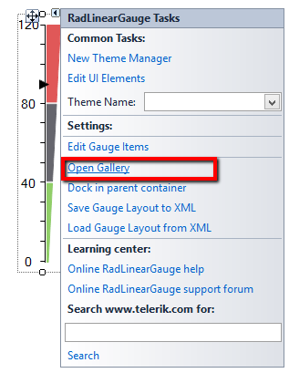
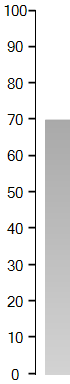

Getting Started
This article shows how you can add the control at design time or with code
Design Time
When you drag a RadLinearGauge from the Toolbox and then drop it on the form, the gauge gallery
will offer you to pick up the desired type:
If you do not choose a gauge's style and just close the gallery, an empty RadRadialGauge will be created.
You can open the gallery from the smart tag as well.

Adding items programmatically
This example demonstrates how to programmatically setup a linear gauge.

__[C#] __
RadLinearGauge radLinearGauge1 = new RadLinearGauge();
radLinearGauge1.Location = new Point(20, 20);
radLinearGauge1.Padding = new System.Windows.Forms.Padding(0, 10, 0, 10);
radLinearGauge1.RangeEnd = 100F;
radLinearGauge1.Size = new System.Drawing.Size(70, 384);
radLinearGauge1.Value = 70F;
radLinearGauge1.BackColor = Color.White;
radLinearGauge1.Vertical = true;
this.Controls.Add(radLinearGauge1);
LinearGaugeBar linearGaugeBar1 = new LinearGaugeBar();
linearGaugeBar1.BackColor = Color.DarkGray;
linearGaugeBar1.BackColor2 = Color.LightGray;
linearGaugeBar1.BindEndRange = true;
linearGaugeBar1.Offset = 35F;
linearGaugeBar1.RangeEnd = 100F;
LinearGaugeLine linearGaugeLine1 = new LinearGaugeLine();
linearGaugeLine1.AutoSize = false;
linearGaugeLine1.Bounds = new System.Drawing.Rectangle(0, 0, 60, 384);
linearGaugeLine1.Offset = 35F;
linearGaugeLine1.Padding = new System.Windows.Forms.Padding(0);
linearGaugeLine1.RangeEnd = 100F;
linearGaugeLine1.Width = 1F;
LinearGaugeTicks linearGaugeTicks1 = new LinearGaugeTicks();
linearGaugeTicks1.Padding = new System.Windows.Forms.Padding(0);
linearGaugeTicks1.TicksCount = 10;
linearGaugeTicks1.TicksLenghtPercentage = 10F;
linearGaugeTicks1.TicksLocationPercentage = 35F;
linearGaugeTicks1.TickThickness = 0.5F;
LinearGaugeLabels linearGaugeLabels1 = new LinearGaugeLabels();
linearGaugeLabels1.LabelFontSize = 3F;
linearGaugeLabels1.LabelLocationPercentage = 15F;
linearGaugeLabels1.LabelsCount = 10;
linearGaugeLabels1.LabelStartVisibleRange = 0F;
radLinearGauge1.Items.Add(linearGaugeBar1);
radLinearGauge1.Items.Add(linearGaugeLine1);
radLinearGauge1.Items.Add(linearGaugeTicks1);
radLinearGauge1.Items.Add(linearGaugeLabels1);
__[VB.NET] __
Dim radLinearGauge1 As New RadLinearGauge()
radLinearGauge1.Location = New System.Drawing.Point(20, 20)
radLinearGauge1.Padding = New System.Windows.Forms.Padding(0, 10, 0, 10)
radLinearGauge1.RangeEnd = 100.0F
radLinearGauge1.Size = New System.Drawing.Size(70, 384)
radLinearGauge1.Value = 70.0F
radLinearGauge1.BackColor = Color.White
radLinearGauge1.Vertical = True
Me.Controls.Add(radLinearGauge1)
Dim linearGaugeBar1 As New LinearGaugeBar()
linearGaugeBar1.BackColor = Color.DarkGray
linearGaugeBar1.BackColor2 = Color.LightGray
linearGaugeBar1.BindEndRange = True
linearGaugeBar1.Offset = 35.0F
linearGaugeBar1.RangeEnd = 100.0F
Dim linearGaugeLine1 As New LinearGaugeLine()
linearGaugeLine1.AutoSize = False
linearGaugeLine1.Bounds = New System.Drawing.Rectangle(0, 0, 60, 384)
linearGaugeLine1.Offset = 35.0F
linearGaugeLine1.Padding = New System.Windows.Forms.Padding(0)
linearGaugeLine1.RangeEnd = 100.0F
linearGaugeLine1.Width = 1.0F
Dim linearGaugeTicks1 As New LinearGaugeTicks()
linearGaugeTicks1.Padding = New System.Windows.Forms.Padding(0)
linearGaugeTicks1.TicksCount = 10
linearGaugeTicks1.TicksLenghtPercentage = 10.0F
linearGaugeTicks1.TicksLocationPercentage = 35.0F
linearGaugeTicks1.TickThickness = 0.5F
Dim linearGaugeLabels1 As New LinearGaugeLabels()
linearGaugeLabels1.LabelFontSize = 3.0F
linearGaugeLabels1.LabelLocationPercentage = 15.0F
linearGaugeLabels1.LabelsCount = 10
linearGaugeLabels1.LabelStartVisibleRange = 0.0F
radLinearGauge1.Items.Add(linearGaugeBar1)
radLinearGauge1.Items.Add(linearGaugeLine1)
radLinearGauge1.Items.Add(linearGaugeTicks1)
radLinearGauge1.Items.Add(linearGaugeLabels1)
'#End Region
'#Region code
radLinearGauge1.SaveLayout("Layout.xml")
radLinearGauge1.LoadLayout("Layout.xml")
'#End Region
End Sub
'#Region "value"
Private Sub radLinearGauge1_ValueChanged(ByVal sender As Object, ByVal e As EventArgs)
If radLinearGauge2.Value > radLinearGauge2.RangeEnd - 10 Then
RadMessageBox.Show("Detected value that is close to the maximum!")
End If
End Sub
'#End Region
End Class